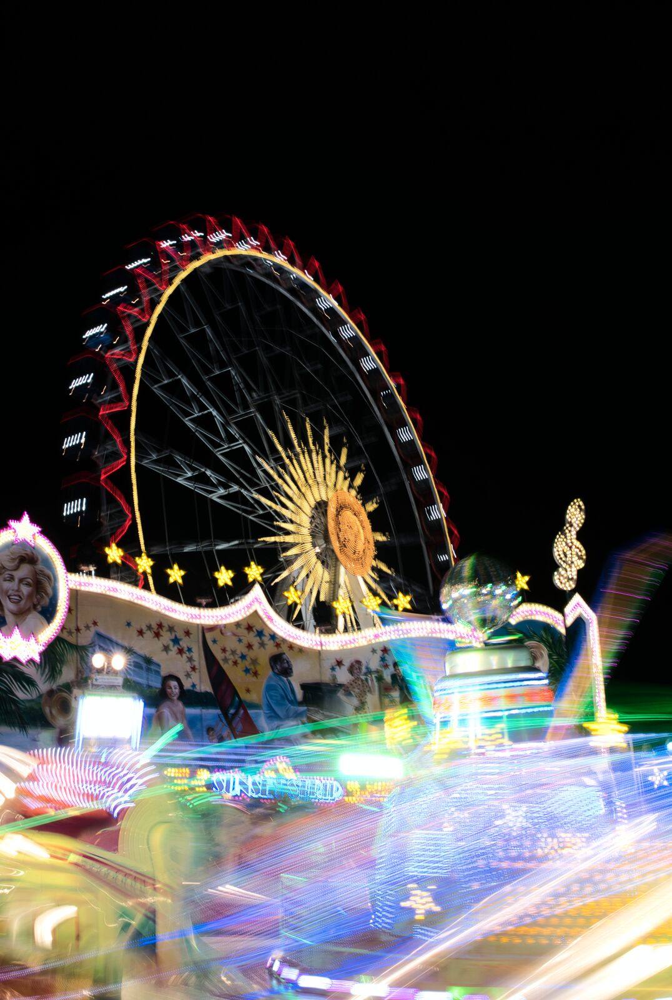

Über mich
Hinter der Kamera: Jannik Fischer.
Ich bin Fotograf und Videograf aus dem Rheinland — unterwegs zwischen Köln, Düsseldorf und Bergisch Gladbach, und wenn es sein muss auch in der Eau Rouge in Spa-Francorchamps.
Angefangen hat alles mit Autos. Inzwischen fotografiere ich alles, was sich bewegt oder still hält: GT3-Rennwagen an der Strecke, Straßenszenen von Alkmaar bis zur Rheinkirmes, Architektur mit klaren Linien und Events — von Bandcontests bis zum CSD in Köln.
Für Unternehmen und Projekte arbeite ich als verlässlicher Partner: Ich habe Architekturbüros, ein Lichtdesign-Unternehmen und Cafés fotografisch begleitet und gemeinsam mit sounds noire Videoprojekte umgesetzt. Was daraus geworden ist, zeigt die Collab-Seite.
- Standort
- Rheinland, NRW
- Schwerpunkte
- Cars · Street · Architektur · Event
- Kontakt
- info@fischer-optix.de
Kein Stock-Look, keine Schablone: Jedes Projekt bekommt Bilder, die zu ihm gehören — fotografiert vor Ort, im echten Licht.